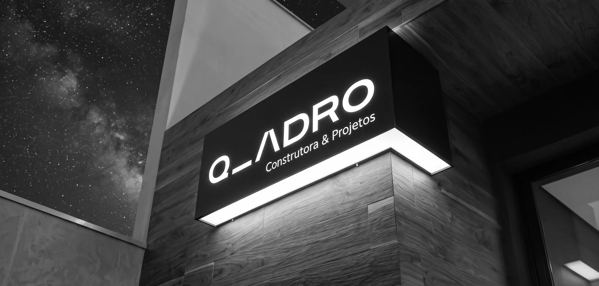
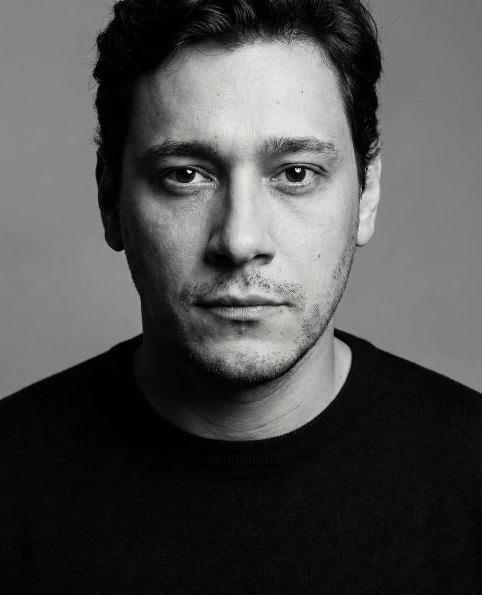
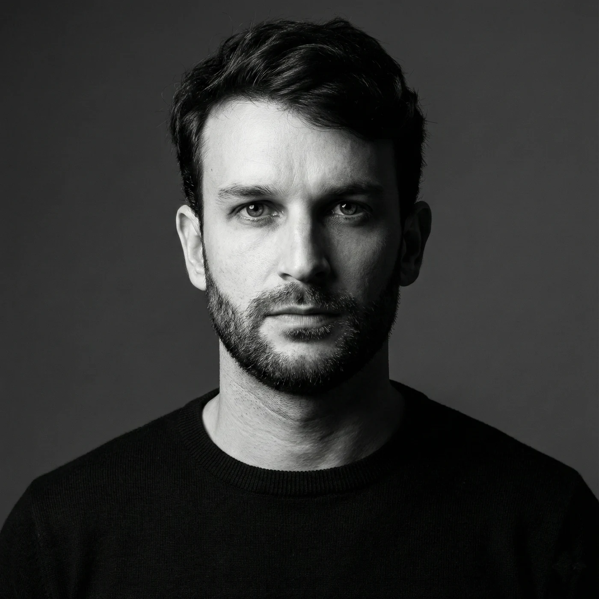

A Qadro é uma empresa de arquitetura, engenharia e construção que atua do projeto à obra, conduzindo cada etapa com método e responsabilidade.

A Qadro nasceu da compreensão de que uma obra bem realizada começa muito antes do canteiro. Ela começa na leitura das necessidades, na análise do contexto e na definição das decisões que orientam todo o empreendimento. É nesse momento que intenção, técnica e viabilidade precisam encontrar uma direção comum.
Reunimos arquitetura, engenharia, planejamento e construção para conduzir o trabalho como um processo contínuo. Ao aproximar as disciplinas desde o início, antecipamos interferências, organizamos informações e estabelecemos bases mais seguras para orçamento, prazos e execução.
Em cada projeto, buscamos transformar complexidade em clareza e planejamento em realização. Aplicamos tecnologia onde ela melhora a decisão, técnica onde ela assegura desempenho e gestão onde ela cria previsibilidade. Assim, construímos espaços coerentes com seu propósito e preparados para permanecer.
UMA CONSTRUÇÃO BEM REALIZADA COMEÇA MUITO ANTES DA OBRA. COMEÇA NA QUALIDADE DE CADA DECISÃO.
Ver Projetos
Arquiteto e engenheiro civil, atua no desenvolvimento e detalhamento de projetos, integrando arquitetura, planejamento e execução. Sua experiência inclui projetos, orçamentos e planejamento de obras públicas para a Prefeitura de Varginha e a Associação dos Municípios do Vale do Baixo Sapucaí. Na Qadro, conduz a concepção dos espaços e sua transformação em soluções tecnicamente viáveis, com atenção à precisão construtiva e à relação entre projeto e obra.

Engenheiro civil e pós-graduado em Gestão de Projetos, atua na viabilização técnica e na gestão de obras comerciais, industriais e residenciais. Reúne experiência em consultoria ambiental, logística e coordenação de equipes, além do desenvolvimento de projetos BIM para instalações elétricas e hidrossanitárias. Na Qadro, conduz planejamento, custos e execução, organizando recursos, prazos e informações para tornar cada empreendimento mais previsível e tecnicamente consistente.
Cada projeto começa com uma conversa. Conte-nos o que você pretende construir e vamos definir o primeiro passo.
Falar com a Qadro